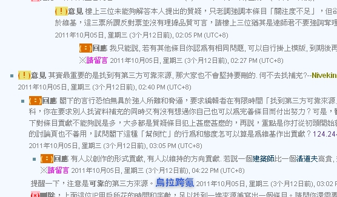

也紀念我們永遠的朋友 李士傑先生（Shih-Chieh Ilya Li）。
維基化．話維基(5)－「官方」的迷思
「官方」一詞，原本指的只是與政府相關的事物，但近年來已經成為對應英文 official 一詞的標準翻譯，指的是能夠代表一個機構或公眾的事物，不見得要與政府單位相關。所以雖然藝人大多不當官，NGO 團體標榜就是無官做，但是它們都可以擁有「官方網站」來表達「官方看法」。
不管是真官、假官，「官方」資訊的真與假在平日就已經是可能發生爭議的問題，而維基百科條目寫作時，官方資料的應用，更容易引起許多的爭議。尤其是有些維基人一下子說「以官方資料為準」，一下子又說「官方資料不可靠」，總讓人有些負面的聯想。事實上，這是出於一個迷思，若能拋開官方、非官方的名義，以維基化的眼光來看，則這樣的迷思自然會減少許多。
官字兩張口，真的可靠嗎？
從中文原始的「官方」定義出發，就從政府單位的資料是否可信開始討論。在一般的情況下，政府單位發佈的統計數字，在準確度上擁有無可匹敵的優勢。因為非政府機構的統計值，多半受限於經費、人力等資源，只能採用抽樣、推估的方式取得；而政府透過行政官僚體系的資源，加上握有法令的強制力量，許多數據可以進行最完整的「普查」。另外，官方的研究往往表現較為保守，怪力亂神的傳說或是誇大的敘述，較不易出現在這樣的材料中。
然而，若要說政府部分的資料絕對可信，肯定會引起抗議。稍微具有獨立思考意識者的人都可以舉出世界各國政府隱瞞真實數據的案例，在中文維基百科主要使用的區域，像台灣政府在 228 事件的調查、中國政府在幾項災難死亡人數的統計上，都可以讓人揶揄「至於你信不信？我反正是信了。」的確，在面臨可能使政府顏面無光的議題時，「官方」數字極有可能受到一定程度的扭曲，這時候完全將其視為絕對可靠的權威，就昧於事實了。
▲ 圖1：在台灣，主計處經常發佈各種政府官方統計資料。
維基百科重視可供查證的資料，同時也強調這些資料的可靠度，避免虛假、杜撰的知識能藉由粗糙的出版品進入維基百科。面對可信卻又可疑的政府資料，並不能夠單單憑著來源就烙上「可靠／不可靠」的烙印，也因此造成一些紛擾。尤其在政治敏感的議題上，往往會有陰謀論者認定政府全然造假，對認為政府資料可靠的維基人視為狼狽為奸的份子；同時，也會有保守份子對政府灌輸的概念全盤接受，將民間的資料都貼上不可靠的標籤試圖消音。兩種人一旦盯上同一個條目，編輯大戰難以倖免，甚至介入調停的中立者也「公親變事主」，被貼上標籤後成為遭到怪罪的對象。
事實上，對於政府單位的資料，我們並不需要站在非黑即白的二分法上，直接斷定絕對的可靠或不可靠；比較恰當地做法是，檢視條目內容與政權之間的利害關係，個別地評估。與政權利害關係越緊密著，越應該參考多方的觀點，綜合地引述；而較無利害關係的資料，調查樣本數較大的官方數據，自然可靠度就要比其他的數據高多了。
官方不可信，難道要信小道消息
政府單位的「官方」讓人煩惱，民間的「官方」則面臨了另外一項問題。在〈維基化‧話維基〉的第四話中，我曾經提到了「觀注度」方針產生的爭議。許多藝人的粉絲會在編寫條目時，面臨引用官方網站的資料卻被維基人提刪。而過程中無論是未得到解釋、或是解釋的人引用的方針指引出現錯誤，經常讓粉絲們誤以為這個資料來源不被承認，是因為被維基人定義為「不可靠」來源。這樣的解釋會造成誤會是理所當然的，在追星族所接觸的資訊中，後援會、少數「有內線」的歌迷經常小道消息滿天飛；而雜誌、報紙影劇版又充斥著八卦。這些消息才是不可靠的來源，而官方發布的澄清或是證實，才是最可靠的資料。維基人卻寧可相信第三方的報章、而不願承認官方網站資料，實在是太不可理諭了。
這實實在在地混淆了兩個範疇：正確性、重要性。來源的可靠性只保證了條目內容的正確，卻無法為條目的重要性背書。舉個例子來說，有一個從不說謊的人，告訴我們「小明的爸其實是隔壁的老王」，這件事情正確性沒有什麼問題，但這個「小明身世」的重要性實在不足以錄入維基百科當中。
{kind=link}
▲ 圖2：維基百科上香港電視節目「頭條娛樂」曾因為只有官網來源，被依關注度不足提刪，引發長篇爭論。
官方網站之所以不能夠當作觀注度的依據，主要是因為在網路時代，設立官方網站、自己發佈訊息的成本極為低廉，幾乎任何人都可以擁有自我宣傳的空間，這些空間的存在當然難以證明條目的主體受到足夠的觀注。不過，在來自第三方的資料來源能夠足以證明條目本身的觀注度之後，官方網站上的訊息，只要不涉及利害關係的部分，大致上都是比其他來源更加可靠的。換言之，這些「官方」出版品並不是維基百科上絕對不能接受的禁區，對於維基人不接受官方訊息的誤解，可真是不白之冤了。
甩開官不官的迷思
官方也好、非官方也罷，在維基化的思考裡，這並不是評估資料的絕對準繩。前文說了這麼多，說穿了，一份資料可靠度，還是回歸到兩個層面來考察。
第一個層面是這份資料是如何生產的，是屬於內在的因素。以統計數據來說，就是指普查或抽樣、樣本數的多寡、問卷的設計嚴謹與否等等的變數。而第二個層面則是這份資料在什麼情況下生產，是屬於外部的因素。例如發表資料的單位或其資助單位有無利害關係、主筆者是否有特定動機、發表資料的地區是否有學術與言論的自由等。
除了了解以上的考察準則之外，對於越是專業的、重大的題目，越應該明白可靠度不會是一個 1 或 0 的二元值，而是一個 0%～100% 之間可能游移的值。最好能比較多份資料，才引用最可靠度較高的一份；甚至，可以引用維基百科另一個重要的方針：「中立的觀點」，將有一定可靠度的各方不同資料皆加以並列。如此，則可以跳脫「官方」的迷思，不再為了這份烙印與維基的伙伴起爭執。
作者簡介
Reke，台灣維基社群成員，PTT 電影板板主，主業為文字工作者。著迷於電影，耽溺於文字；在現實裡怯弱地柔從，在評論裡驕傲地反抗。電影部落格：https://rekegiga.blogspot.com/
您也許有興趣閱讀以下文章:
- 維基化．話維基(7)－誰才是專家？（下） - 2012-02-17
- 維基化．話維基(6)－誰才是專家？（上） - 2012-02-06
- 維基化．話維基(4)－我的條目不出名？ - 2011-12-20
- 維基化．話維基(3)－誰是條目的所有人？ - 2011-11-24
- 維基化．話維基(2)－讓政治爭議不再棘手 - 2011-11-09
- 維基化．話維基(1)－從腦袋開始維基化 - 2011-10-24
自由軟體鑄造場電子報 : 第 188 期 PaaS：程式語言開發在雲端「Programming in Paas」（下）
標籤: 維基化, 關注度, notable, 維基百科, 方針, 指引, 寫作指引, Wikipedia,
分類: 自由專欄
專欄總覽


E-Mail：contact@openfoundry.org Address：台北市南港區研究院路2段128號 中央研究院資訊科學研究所 . 隱私權條款. 使用條款